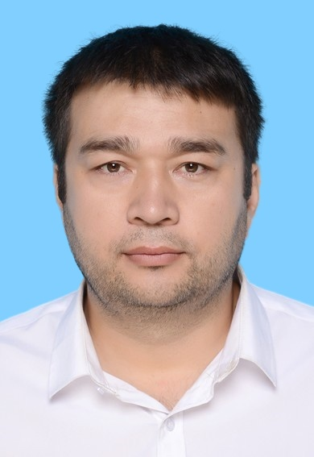

Computer Science researcher specializing in Medical AI, Radiology Report Generation, and Multimodal Deep Learning. Also experienced in IT education, international relations, and academic program management across Uzbekistan and China.

Automated radiology report generation using multimodal deep learning. Integrating vision-language models with dynamic memory and context-aware gating for clinical NLP.
Adaptive scoring mechanisms for clinical text generation. Evaluation using BLEU, METEOR, ROUGE-L in medical report contexts. LLM fine-tuning strategies for low-resource clinical settings.
Teaching computer science, programming, and AI literacy at university level. Curriculum design for both technical and non-technical learners.
Knowledge distillation for efficient image classification. Earlier work on apparel image retrieval and feature matching using deep learning architectures.